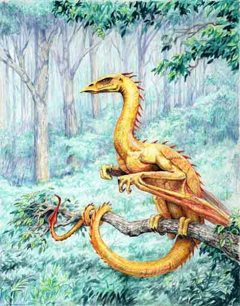

| Climate/Terrain | Foreste Temperate |
| Frequency | Very Rare |
| Organization | Solitary |
| Activity Cycle | Day |
| Diet | Carnivoro |
| Intelligence | Highly intelligent (14) |
| Treasure | D (solo nella tana) |
| Alignment | Neutral |
| No. Appearing | 1 |
| Armor Class | 2 |
| Movement | 12, Fl. 18 |
| Hit Dice | 5 + 1 |
| Thac0 | 15 |
| No. of Attacks | 1 Morso |
| Damage / Attacks | 1d8+1 |
| Special Attacks | Magical Powers |
| Special Defenses | Vedi Sotto |
| Magic Resistance | 33 % |
| Size | Large (4 m. lunghi, ap. alare 6 m.) |
| Morale | Champion (16) |
| XP value | 1250 |
Descrizione
I Golden Drakes sono i più evoluti della loro razza. Si tratta di creature estremamente sofisticate e dalla grande intelligenza. Le loro scaglie sono dorate con striature e riflessi rossicci, i loro arti anteriori sono congiunti alle loro grandi ali. Sono comunque dotati di piccoli artigli prensili con i quali manipolano con facilità vari oggetti.
Combat
I Golden Drakes
attaccano con le loro fauci e non sono dotati di alcun soffio. Hanno
però diversi poteri magici che possono utilizzare durante il combattimento. Si
tratta di poteri magici innati per cui non utilizzano componenti e non possono
perdere la concentrazione. Per poterli usare, ad ogni modo, non devono trovarsi
in volo. Tutti i poteri sono lanciati ad un casting
time pari a 3, si tratta
di effetti magici che si
considerano lanciati all'8° livello di potere.
I poteri sono i seguenti:
Corazzamento Magico
(1/giorno):
Le scaglie del drake diventano estremamente lucenti, l'AC del Golden Drake
scende ad AC -1 per 6 rounds.
Heat Ray (3/giorno): Il drake lancia un raggio di luce che scioglie per il calore quello che colpisce. Può colpire una vittima a 20 metri di distanza. Il raggio provoca 3d6 danni (dimezzabili con tiro salvezza contro incantesimi).
Heat Scales (1/giorno): Le scaglie del drake diventano incandescenti per 3 rounds. Chi è colpito dal drake o chi lo scolpisce in melee subisce 1d6 danni aggiuntivi da calore a colpo subito o inflitto.
Light
Scales (1/giorno):
Le scaglie divengono lucentissimi ed abbagliano tutti coloro si trovano entro 15
metri dal drake. Chi si trova nell'area e non effettua un tiro salvezza contro
incantesimi sarà accecato per 2d4 rounds.
Habitat/Society
I Golden Drakes sono creature solitarie che abitano nelle foreste, lontani dai centri abitati e dal rumore. Non sono animali territoriali, anzi, si spostano nelle loro foreste spesse e non è raro che volino via cambiando foresta di tanto in tanto.
Sono diffidenti nei confronti degli umani e degli umanoidi e non esitano ad attaccarli, a meno che non siano adeguatamente rassicurati. Sono tolleranti solo con gli elfi e con le altre creature della foresta.
Le loro tane sono costruite nel mezzo della foresta in zone sicure.
Ecology
I golden drakes oltre a saper comunicare nella loro lingua, il Glodrian, nel 50% dei casi parlano anche la lingua dei esseri civilizzati a loro più vicini (spesso l'elfico). La loro pelle è particolarmente ricercata in quanto con le loro scaglie è possibile produrre ottime corazze speciali.
Mystical Resource Sourge
(Scaglie) Quantità:
1d3, Presenza 33% - Scuola di Magia:
Abjuration
- Qualità della Risorsa: Common.
Mystical Resource Sourge
(Cuore) Quantità: 1, Presenza 33% - Scuola di Magia:
Enchantment
- Qualità della Risorsa:
Uncommon.